读paper13-Multi-Agent盘点
读paper13：Multi-Agent盘点
MetaGPT
论文：https://arxiv.org/abs/2308.00352
代码：https://github.com/geekan/MetaGPT
MetaGPT 以一行需求作为输入，输出用户故事/竞争分析/需求/数据结构/API/文档等
MetaGPT利用SOP（Standard Operating Procedures，标准作业程序）来协调基于大语言模型的多智能体系统，从而实现元编程技术。该框架使用智能体模拟了一个虚拟软件团队，包含产品经理、架构师、项目经理、工程师、质量工程师等角色，并引入SOP成为框架的虚拟软件团队的开发流程。其专注于软件开发，覆盖了从需求分析到代码实现的全生命周期覆盖。

架构
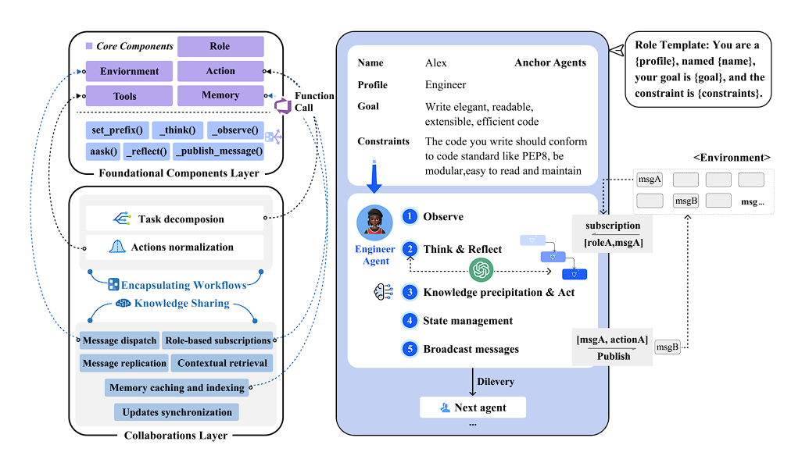
框架采用双层架构设计：
基础组件层以AI Agent为核心，提供了观察、思考等能力。其建立了个体智能体操作和在系统范围内进行信息交换所需的核心模块，包括环境、记忆、角色、行动和工具。
- 环境：为智能体提供协作工作空间和交流平台。
- 记忆：存储和检索历史消息。
- 角色：根据领域封装专业技能和工作流程。
- 行动：执行模块化的子任务。
- 工具：提供常见的服务和工具。
协作层通过知识共享和工作流封装等关键机制促进智能体协调。在这一框架内，MetaGPT 的智能体能力得到了显著增强。在被称为 “锚智能体 ”的专门角色提示引导下，智能体的实例化使角色具备了观察、思考、反思和知识积累的能力。这些角色通过既定的订阅和发布方法与环境互动。
- 知识共享：该机制允许智能体有效地交换信息，为共享的知识库做出贡献。智能体可以以不同粒度存储、检索和共享数据。它不仅可以加强协调能力，还减少了冗余的通信，提高了整体的运行效率。
- 封装工作流程：该机制利用SOP将复杂任务分解为较小、可管理的子任务。它将这些子任务分配给适合的智能体，并通过标准化的输出对其进行监控，确保它们的行动与总体目标一致。
原理与样例
在MetaGPT中，多智能体被视为一个智能体社会，其中多智能体=智能体+环境+标准流程（SOP）+通信+经济，这些组件各自发挥着重要的作用：
- 智能体：在单个智能体的基础上，扩展了多智能体定义。在多智能体系统中，可以由多个单智能体协同工作，每个智能体都具备独特有的LLM、观察、思考、行动和记忆。
- 环境：环境是智能体生存和互动的公共场所。智能体从环境中观察到重要信息，并发布行动的输出结果以供其他智能体使用。
- 标准流程（SOP）：这些是管理智能体行动和交互的既定程序，确保系统内部的有序和高效运作。
- 通信：通信是智能体之间信息交流的过程。它对于系统内的协作、谈判和竞争至关重要。
- 经济：这指的是多智能体环境中的价值交换系统，决定资源分配和任务优先级。

定义好各个Agent的角色后，需要设置工作流程（Work Flow）：
- 产品经理角色Agent：根据用户的产品需求进行深入分析，并将任务进行分解，形成结构化的需求文档（Product Requirements Document，PRD）；（preliminary functional breakdown）；
- 架构师角色Agent：接收到产品经理角色大模型生成的PRD，将其转换为具体的系统设计、数据结构设计、文件列表等；
- 项目管理角色Agent：将架构师设计的系统等待开发工作进行任务分解（具体的代码接口功能）；
- 软件工程师角色Agent：接收到具体的接口和功能，进行代码生成，包括类、方法等；
- QA工程师角色Agent：对于实现好的功能函数和类进行测试。
- 最后交付给用户，由用户进行评价反馈。
角色定义不仅引入了基于预期功能的行为指导，而且有助于创建多样化和专业化的智能体，每个智能体都是其领域的专家。
- 思考与反思（Think & Reflect）：角色可以检索角色描述来构建思考，然后通过
_think()函数来反思需要做什么并决定下一步的行动。 - 观察（Observe）：角色可以观察环境，并根据观察结果使用
_observe()函数进行思考和行动。它们会关注重要信息，并将其纳入记忆中，以丰富其上下文理解并为未来的决策提供信息。 - 广播消息（Broadcast messages）：角色可以使用
_publish_message()函数将消息广播到环境中。这些消息包含有关当前执行结果和相关行动记录的详细信息，用于发布和共享信息。 - 知识沉淀与行动（Knowledge precipitation & Act）：角色不仅是广播者，也是环境信息的接收者。角色可以评估传入的消息的相关性和及时性，从共享环境中提取相关知识，并维护一个内部的知识库以支持决策。它们通过咨询LLM，并利用其具有丰富上下文信息和自我知识的来执行行动。执行结果被封装为消息，而规范性组件则由环境共享。
- 状态管理（State management）：角色可以通过更新工作状态和监控待办事项列表来跟踪它们的行动。这使得角色能够按顺序处理多个行动而不中断。在执行每个行动时，角色首先锁定其状态。完成行动后，将状态标记为解锁。这样可以防止其他行动中断工作流程。
知识共享：消息池
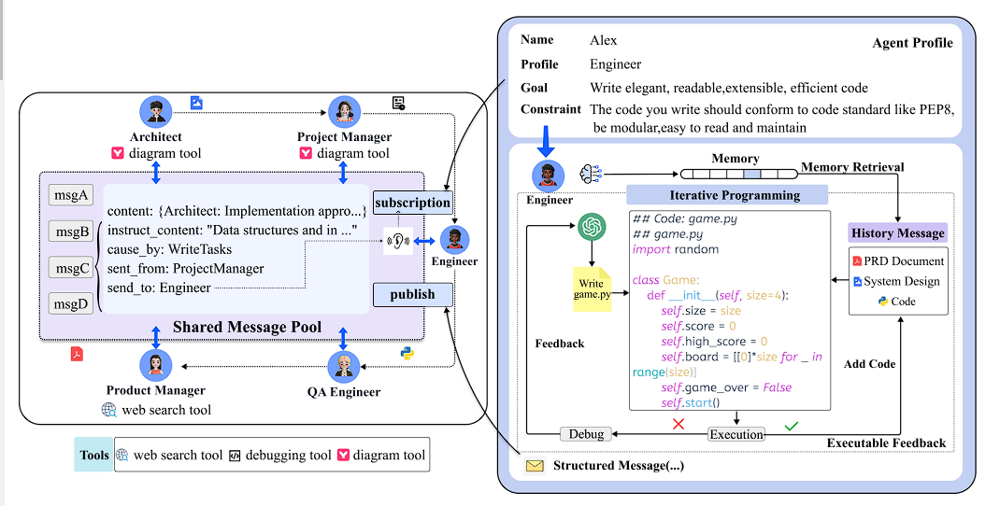
- 关键点：发布-订阅机制
上图左边：agent使用一个全局共享消息池来发布结构化消息。他们还可以根据个人资料订阅相关消息。每个agent都会监控环境（即 MetaGPT 中的消息池），以发现重要的任务（如来自其他agent的消息）。这些信息可以直接触发行动，也可以协助完成任务。
为了提升agent在全局消息中提取有用信息的能力，该研究设计了发布-订阅机制。agent不依赖对话，而是利用特定角色的兴趣来提取相关信息。他们可以根据自己的角色特征选择要关注的信息。在实际应用中，agent只有在收到所有先决条件后才会启动其行动。
- 关键点：结构化通信
MetaGPT 中的agent通过文档和图表（结构化输出）而非对话进行交流。这些文档包含所有必要信息，避免了无关内容或缺失内容。
可执行反馈的交互式编程
- 关键点：可执行反馈（一种self-correction mechanism， 用于在运行时进一步提高代码生成质量）。
上图右边：生成初始代码后，Engineer智能体将运行并检查错误。如果出现错误，智能体会检查存储在内存中的运行信息，并将它们与PRD、系统设计和代码文件进行比较。
这样，Engineer就能利用自身的历史执行和调试内存记录，不断改进代码。为了获取更多信息，Engineer会编写并执行相应的单元测试案例，然后接收测试结果。如果测试结果令人满意，就会启动额外的开发任务。否则，Engineer将在继续编程前调试代码。
AutoGen
https://www.zwn2001.space/posts/Graduate-Works/Works/AutoGen-multiple agents framework/
AutoAgents
论文：https://arxiv.org/abs/2309.17288
https://www.yiyibooks.cn/arxiv/2309.17288v3/index.html
代码：https://github.com/Link-AGI/AutoAgents
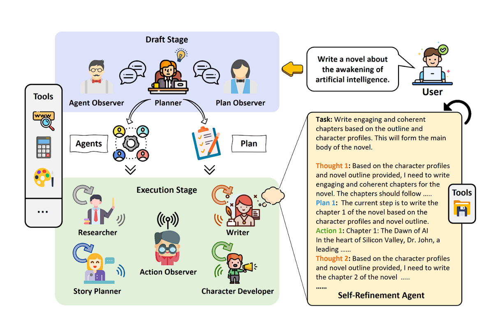
AutoAgents的过程是分为两个关键阶段：Drafting 阶段和Execution阶段。Drafting阶段包括三个预定义agent（Planner、Agent Observer和Plan Observer）之间的协作讨论来综合定制的agent团队和适合输入问题的执行计划或任务。Execution阶段通过agent间协作和反馈完善计划，以及产生最终结果。
相比于此前的多智能体框架，此框架有更强的灵活性，即：解决问题的agents并不是预定义的，而是根据具体问题进行动态配置的。
Drafting Stage
一方面，生成的agent应该表现出多样性以适应不同的任务。 另一方面，agent 和 plan generation 应遵循一定的原则，使其角色分配更加合理。
- Planner 根据任务内容生成并细化agent团队和执行计划。
- Agent Observer 对agent团队成员的理性及其与任务的匹配程度提供建议。
- Plan Observer 对执行计划的理性及其与任务和agent团队的匹配程度提供建议。
Agent Generation
对于每个agent，Planner 需要指定其提示 P、描述 D、工具集 T 和建议 S.
- Prompt 为每个特定agent提供详细且定制的专家身份描述，其中包括概况、目标和约束。 概况反映了角色或职位的领域专业知识。 目标表示该角色要实现的主要职责或目标。 约束指定角色在执行操作时必须遵守的限制或原则。
- Description 提供了额外的具体标识，以帮助建立更全面的角色、制定执行计划和检查问题。
- Toolset 为agent配备了可以使用的工具，这些工具是从预定义的工具集中选择的。 这里不为每个智能体使用所有工具的原因是为了防止工具过多导致决策混乱。
- Suggestions 为每个Agent执行当前任务提供一些建议，包括但不限于清晰的输出、历史信息的提取以及执行步骤的建议。
Agent Observer会检查所要生成的全部agents，并根据每个Agent的描述信息和任务内容来评估每个Agent与任务的兼容性。 最后，Agent Observer检查agent列表中是否有任何冗余或缺失的角色，并相应地删除或添加它们。
Plan Generation
在生成agent的同时，Planner制定执行计划，并通过与计划观察者的相互沟通促进其逐步改进。 对于给定的任务，规划者会详细说明在执行计划 P 完成该任务的具体步骤 每个步骤 需要明确识别负责执行该步骤的agent 以及该步骤所需的输入信息和预期输出。
Plan Observer会针对Planner生成的plan进行评估、迭代
Execution Stage
关键的机制：
- agents通信
- vertical communication paradigm
- Self-refinement Agent
- 通过自我持续的思考、计划、执行和反馈的循环使得单个agent有效地执行和完成任务内容
- Collaborative Refinement Action
- agent以顺序方式协作细化和执行任务。 每轮协作都涉及agent之间固定的轮流顺序，agent观察当前的结果来生成响应。
- Knowledge Sharing Mechanism
- 短期记忆：主要集中在一个单独的行动上，涵盖了在单个行动的自优化或协作优化阶段出现的中间概念、策略和结果的全部范围。 这些行动通常会得出关键信息的简化摘要，体现了优化轨迹的最终阶段。
- 长期记忆：主要集中于记录各种行动的历史轨迹，主要记录每个任务的执行结果以及重要反馈信息的综合。 这一方面对于评估任务完成的整体程度至关重要。
- 动态记忆：主要服务于需要专门关注的行动。 行动观察者可以访问长期记忆档案，熟练地提取辅助信息，并根据行动的特定要求动态地调整它以执行任务。 此过程极大地提高了单个行动在任务完成中的效率。
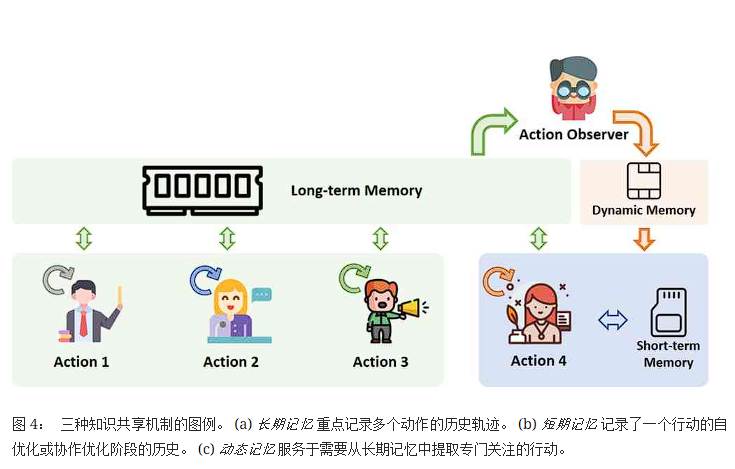
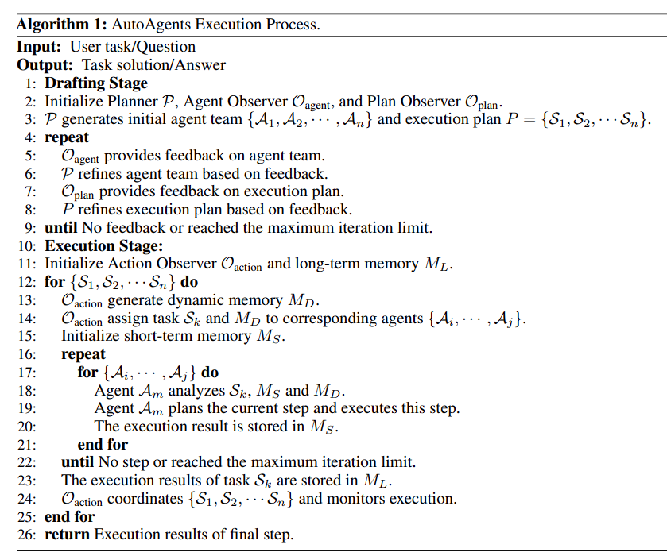
TinyTroupe
https://github.com/microsoft/TinyTroupe
用于模拟具有特定性格、兴趣和目标的人（面向角色扮演），旨在启发生产力和业务场景，从而为更成功的项目和产品做出贡献。
最近，我们看到 LLM 被用来模拟人类，但主要是在 “游戏式 ”环境中，用于思考或娱乐目的。此外，还有一些用于构建Multi-Agent系统的库，如 Autogen 和 Crew AI，用于解决问题和辅助人工智能。如果我们将这些想法结合起来，模拟人来支持生产任务，会怎么样呢？TinyTroupe 就是我们的尝试。为此，它遵循以下原则：
- 程序化：代理和环境是以程序化方式（Python 和 JSON）定义的，因此使用非常灵活。因此，它们也可以作为其他软件应用程序的基础
- 分析性：旨在增进我们对人、用户和社会的了解。与娱乐应用不同，这一点对于商业和生产力用例至关重要。这也是我们建议使用 Jupyter 笔记本进行模拟的原因，就像使用它们进行数据分析一样。
- 基于角色：代理应是人的典型代表；为提高真实性和控制性，鼓励详细说明这些角色：年龄、职业、技能、品味、观点等。
- Multi-Agent：允许Multi-Agent在定义明确的环境约束条件下进行交互。
- 实用性强：提供了许多机制来促进规范、模拟、提取、报告、验证等。这是模拟处理与辅助工具显著不同的一个方面。
- 面向实验：模拟由实验者定义、运行、分析和完善
MarsCode
多 Agent 协作框架中包含以下 7 类角色：
- Searcher：利用 CKG、LSP 等代码检索工具收集与当前问题相关的 repo 内代码片段；
- Manager：根据收集到的相关代码片段对问题进行定性和分流，将问题场景分为动态调试修复和静态修复两类；
- Reproducer：在动态调试修复场景下，根据相关代码和问题描述编写复现脚本，并在沙箱中对脚本进行动态调试以确认复现成功；
- Programmer：根据问题描述和相关代码进行编辑代码，并结合 Tester 的测试结果进行多轮迭代修改；
- Tester：根据问题复现脚本，对当前代码版本进行动态验证，检查问题是否得到解决；
- Planner：在静态修复场景下，根据问题和相关代码，制定求解计划，规划需要修改哪些代码片段及其修改方式；
- Symbol Editor：根据修改计划，对所负责的代码 Symbol 进行修改，返回修改补丁。
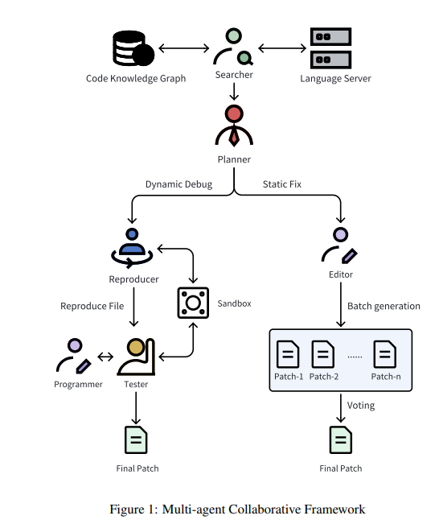
我们为不同的 Agent 配备了相应的工具集以支撑其完成指定任务，各 Agent 配备的工具集如下表所示。值得注意的是，我们并没有令每个 Agent 都拥有所有工具的使用权，而是尝试限制各个 Agent 的能力和职责范围，从而降低单个 Agent 解决当前环节问题的难度，以提高任务执行的稳定性和输出结果的质量。
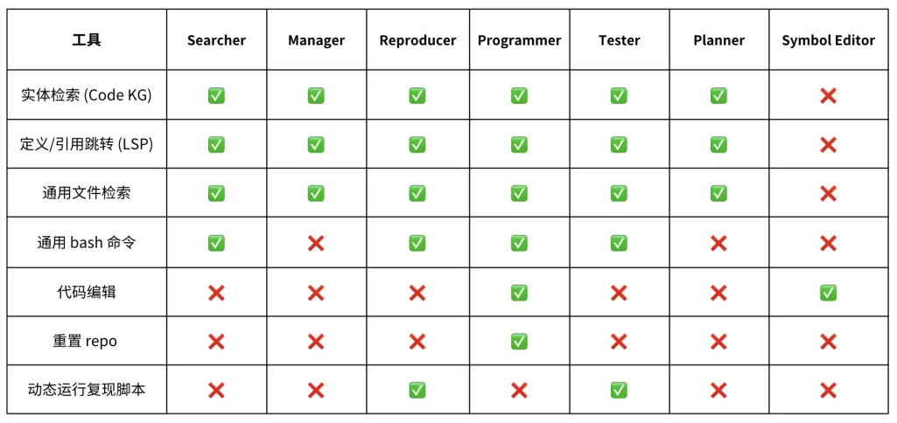
该框架支持动态修复，也支持静态修复，在静态修复场景下，由于无法直接对问题进行复现和动态验证，需要制定针对该问题的静态修复方案。过程如下：
- 由 Planner 根据检索到的相关代码片段，收集更多代码上下文，制定修改方案，修改方案以代码符号(Symbol)为单位组成，每条修改意见包含需要修改代码所在的 Symbol名（类、函数、Top-Level变量等）、修改处所在文件、该 Symbol 的代码行号范围、修改描述；
- 在生成修改方案的过程中，我们采用了一些轨迹采样和搜索的策略，使生成的 plan 有较高的准确性；
- 针对修改方案中的每一个 Symbol，实例化出一个Symbol Editor，用于完成改 Symbol 的修改计划，每个 Symbol Editor 完成后通过 git commit 提交修改；
- 完成所有 Symbol 的修改后，将当前代码状态与 Base commit 进行差异对照，生成最终补丁作为该问题的修复方案
框架下的代码检索工具
知识图谱
代码知识图谱是将代码元素、属性以及元素之间的关系表示为图结构，从而帮助 Agent 更好地理解和管理大规模的代码库。在这种图结构中，顶点代表代码的实体（如函数、变量、类等），边则代表实体之间的关系（如函数调用、变量引用、类的继承关系等）。通过这种方式，代码知识图谱可以为代码库提供更丰富且结构化的信息。
我们通过程序分析的技术，将仓库中的代码，文档信息进行分析组织，生成一个以变量，函数，类，文件等代码语义节点为实体，文件结构关系、函数调用关系，符号索引关系为边的多向图。构成一张融合了代码，文档，仓库信息等多数据源的代码知识图谱。
在构建完成代码知识图谱后，Agent 的代码检索请求将通过下图中的管道进行处理并实现召回。
- 将 Agent 的问题与代码语句（如有），通过模型进行实体识别，得到实体 mention + 类型，然后在知识图谱中进行 SQL 搜索查询，查询结果标记为候选实体列表 1；
- 将 Agent 的问题与代码语句（如有），进行 embedding，在知识图谱中进行 embedding 相似度匹配，取相似度最高的一批实体，为候选实体列表 2；
- 将 Agent 的问题直接通过关键词识别构造查询语句，在知识图谱中进行 SQL 搜索查询，查询结果标记为候选实体列表 3。
最后将候选实体列表 1 & 2 & 3 进行合并，通过精排模型，得到最终实体列表 X，返回给 Agent，完成代码检索。
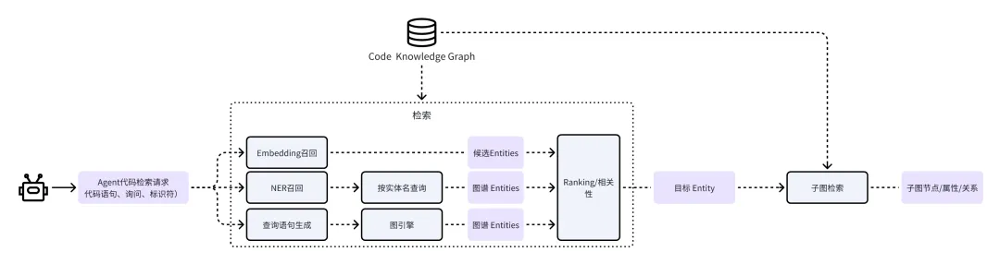
语言服务器协议
代码知识图谱能够应对大部分目标工程下的类、函数定义与引用的检索需求，但仍存在以下盲区：
- 代码知识图谱是对目标工程进行构建，而目标工程外（如标准库、第三方库等）的类、函数、变量的定义和引用是无法通过代码知识图谱被准确召回的；
- 对于库中存在多个重名实体的情况，LSP 相比代码知识图谱能够更准确地跳转到相关类或函数定义，避免召回和 Rerank 过程带来的遗漏或冗余；
为解决上述问题，豆包MarsCode Agent 利用通用的语言服务协议（Language Server Protocol）实现用户机器上全局、精确的代码召回。
语言服务器协议是一种由 Microsoft 开发的协议，广泛适配包含编程语言、标记语言、多种工具和框架在内的语法体系，在 IDE 场景下具有很好的通用性。豆包MarsCode Agent 调用语言服务器协议实现代码召回的过程如下图所示：
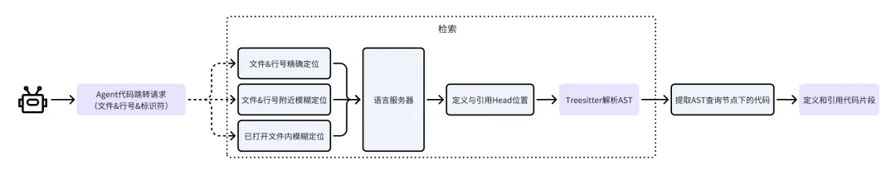
Agent 调用语言服务器进行代码召回的过程与开发者在 IDE 中使用“Ctrl+左键”点击某个标识符进行代码跳转的过程是一致的，但由于 Agent 的数字定位和计算能力较弱，我们增加了模糊定位功能以进一步强化 Agent 使用 LSP 工具的能力：
- 根据 Agent 的提供的文件名和行号，在该行内寻找标识符并计算列号，构成 LSP 请求；
- 根据 Agent 的提供的文件名和行号，在该行附近寻找标识符并计算列号，构成 LSP 请求；
- 根据 Agent 的提供的标识符和行号，在 Agent 打开和浏览过的文件中寻找标识符，并构成 LSP 请求；
这三个服务的优先级自上而下由高到低，使用第一个成功得到响应的 LSP 请求结果作为工具的输出。
代码编辑
使用MarsCode AutoDiff进行代码编辑描述，但仍然会存在诸如类型错误、变量未定义、缩进调整错误、括号没有正确闭合等 LLM 常见的代码编辑语法问题，针对这些问题，我们使用语言服务器协议对 AutoDiff 修改前后的文件进行静态代码诊断，过程如下：
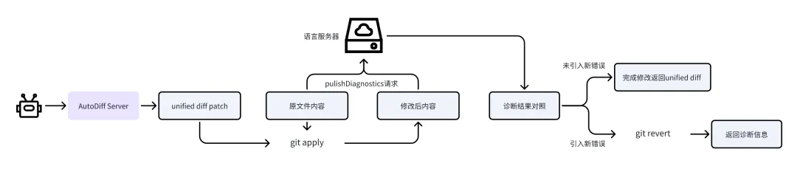
- 对 AutoDiff 生成的 Unified diff 格式的代码编辑补丁在原文件上进行 apply，得到修改后的文件内容；
- 对原文件内容进行 LSP 静态代码诊断，保存诊断结果；
- 对修改后文件内容进行 LSP 静态代码诊断，保存诊断结果；
- 对两次代码诊断结果进行对照，检查 Agent 的诊断结果是否引入新的静态错误（只关注 Fatal 和 Error 级别的诊断结果）；
- 如果未引入新错误，则完成修改并向 Agent 返回修改成功的消息和相应的 Unified diff 描述；
- 如果引入了新错误，则将相关诊断信息返回给 Agent 进行修改和调整。
PS.通用架构盘点
Multi Agent Collaboration
为每个任务或领域创建一个专门的智能体，并将任务分配给正确的 “专家”。
比如MetaGPT
不同的智能体在共享的消息草稿（其实就是共享的思考链上下文）上进行协作。这意味着他们中的任何一个所做的工作都对另一个可见。这样做的好处是其他智能体可以看到所有的个别步骤。这样做的缺点是有时候过于冗长和不必要地传递所有这些信息，有时候只需要一个智能体的最终答案。我们称之为协作，因为这个消息草稿是共享的性质。
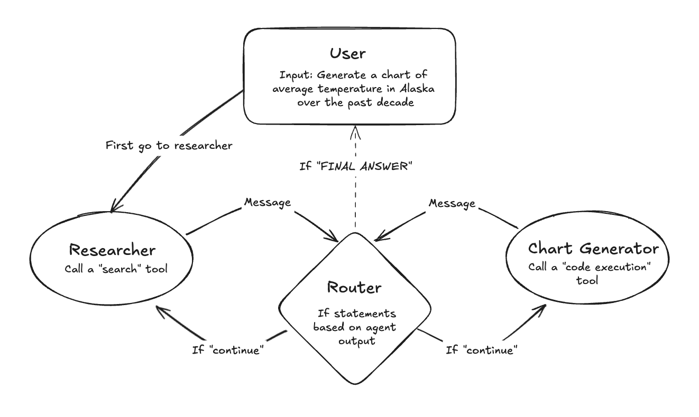
控制状态转换的主要因素是 router 路由器，但它是一个基于规则的路由器。基本上，在每次LLM调用之后，它会查看输出。如果调用了工具，则调用该工具。如果没有调用工具，而LLM回应“FINAL ANSWER”，则返回给用户。否则（如果没有调用工具，而LLM没有回应“FINAL ANSWER”），则转到另一个LLM。 (注：其实就是常见的 reAct 基础上增加了几个 LLM ，每个 LLM 都可以看到共同思考的上下文链路，中间的路由就是根据关键字正则匹配调用哪些工具。 但纯 reAct只有一个 LLM 系统提示词，而多 Agent 的每个 LLM 是有自己独立的系统提示词，甚至可以是独立微调的 LLM )
Agent Supervisor
使用一个 supervisor 进行任务分配与调度，相对于将上面基于规则的 Router 用LLM替换
比如AutoAgents

其实就是使用一个专门的 LLM 作为supervisor，接受用户信息，再根据信息转发到适合的专用 Agent 上。这样的好处就是每个特定领域的 Agent 聚焦自己擅长的事情，这里既可以是提示工程的优化，也可以是 llm 微调。
Hierarchical Agent Teams
在上一个架构的基础上，对下面的agent再次分层，将同类任务的agent组成一个 team。比如写文章的任务：可以由网络检索 Agent、信息筛选Agent、文章段落构思 Agent、文章撰写 Agent、文章检查 Agent等组合成一个团队。每个 Agent 又能调用自己的工具，这种适合非常大型的 Agent 协同）
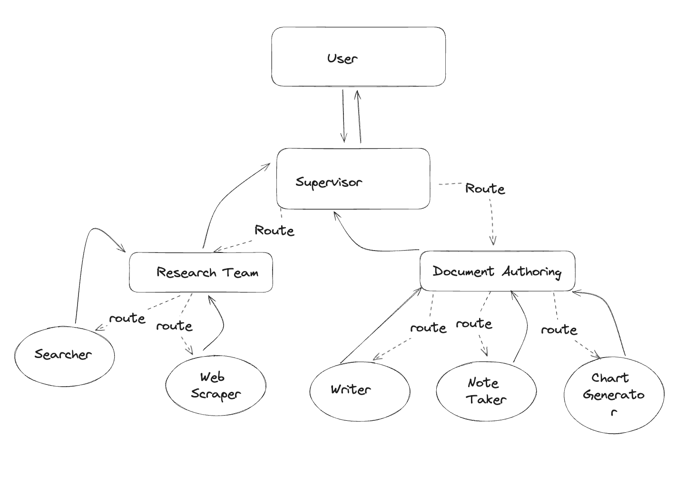
Reference
https://blog.csdn.net/qq_27590277/article/details/135834392
https://arxiv.org/abs/2308.00352
https://blog.csdn.net/qq_27590277/article/details/135053493
https://blog.csdn.net/GodGump/article/details/137483678
https://arxiv.org/abs/2309.17288
https://github.com/Link-AGI/AutoAgents/blob/main/docs/README_CN.md